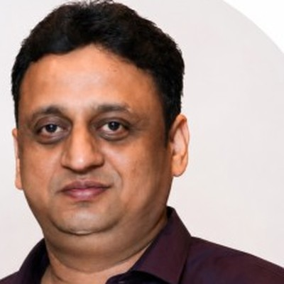

Banking & Financial Services · Gurugram, India
Vice President · Program Delivery & Data Governance Lead
Transition, Decommissioning & Transformation
Eighteen years delivering large-scale transformation, regulatory change and data lifecycle programmes — translating strategic ambition into measurable outcomes across Business, Technology, Risk and Compliance.

Program and Transformation Lead with over 18 years in Banking & Financial Services, delivering large-scale transition, transformation and regulatory programmes from initiation through stabilization.
At NatWest Group I led delivery governance for the Ulster Bank Withdrawal Programme — a global, cross-functional technology simplification and application decommissioning initiative — partnering with senior executives across Operations, Technology, Risk, Compliance and Vendor teams. By assessing business usage, regulatory obligations and retention requirements across a portfolio of 670+ applications, I contributed to approximately £1.7 million in programme savings while reducing technology complexity and operational risk.
My earlier career spans core banking migration (Finacle), card and ATM payment platforms, and enterprise test-maturity governance (TMMi). I am Scrum Master accredited and apply Generative AI responsibly to improve documentation, analysis and decision support.
End-to-end delivery, integrated plans, milestones, dependencies, RAID management and committed-deliverable tracking.
Transition strategy and readiness, knowledge transfer, data migration, cutover planning, go-live and stabilization.
Process improvement, standardization, estate rationalization, target operating model design and benefits realization.
Steering committee governance, executive dashboards (JIRA, Power BI) and status, risk and decision reporting to senior leadership.
GDPR-aligned retention, archival and automated destruction; data quality and control frameworks; audit readiness.
Regulatory transformation, control frameworks, change impact assessment and escalation management.
Primary contact for senior Business, Risk, Compliance, Operations and Technology stakeholders across global teams.
Cards & Payments, ATM systems, Finacle Core Banking, transaction processing and settlement.
Agile/Scrum, Waterfall, JIRA, Confluence, Planview, Informatica ILM, Power BI, Microsoft Copilot.
I'm always interested in connecting with leaders and organizations seeking to unlock business value through strategic change, governance excellence and transformation-led growth.